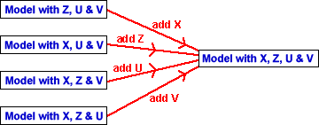

Marginal (Type 3) sums of squares
The marginal sums of squares are the changes to the residual sum of squares caused by deleting the individual variables from the full model. The diagram below illustrates the models being compared by the marginal sums of squares when there are four explanatory variables.

Note that the marginal sums of squares cannot tell you anything about the fit of models with fewer than three explanatory variables.
Sequential (Type 1) sums of squares
Sequential sums of squares also describe the effect on the residual sum of squares of changing the explanatory variables in the model. They give the reductions in the residual sum of squares as the variables are added in order, starting from the model with no explanatory variables.

The sequential sums of squares are specific to a particular order of adding the explanatory variables.
In later sections, we will show applications where only one such sequence is appropriate.
For example, it sometimes does not make sense to add a variable V unless variables X, Z and U are already in the model.
Relationship between sums of squares
The fitted values for the model with no explanatory variables are all equal to the response mean. The residual sum of squares for this model is therefore equal to the total sum of squares.

The sequential sums of squares are the reductions in this value as the variables are added in turn to the model, leaving eventually the residual sum of squares for the full model.
Equivalently, we could start from the full model with all explanatory variables; the sequential sums of squares are the increases to this as variables are dropped from the model in turn, leaving eventually the residual sum of squares for the model with no explanatory variables — i.e. the total sum of squares.
The residual sum of squares from the full model plus all the sequential sums of squares therefore equals the total sum of squares.

Sum of squares table
Sequential sums of squares are usually presented in a table called a sum of squares table.
A column is usually added giving the degrees of freedom for the sums of squares. Since the sequential sums of squares that we have described above each involve removal or addition of a single explanatory variable, they all have 1 degree of freedom. The total degrees of freedom are n - 1 and the residual degrees of freedom satisfy the equation,
Oxygen uptake when running
Oxygen uptake rates were measured from 17 men aged between 40 and 49 who were involved in a physical fitness programme at North Carolina State University.
| Response | |||
|---|---|---|---|
| Oxygen uptake | Y | Oxygen uptake rate (ml per kg body weight per minute) | |
| Explanatory variables | |||
| Weight | X | Body weight (kg) | |
| Running time | Z | Time to run 1.5 miles (minutes) | |
| Resting heart rate | U | Heart rate when resting | |
| Running heart rate | V | Heart rate at same time oxygen uptake was measured | |
The table below shows the sequential sums of squares when the variables are added to the model in the order Weight, Running time, Resting heart rate, and Running heart rate.
Drag the red arrow up to remove variables from the model. Observe that the sequential sums of squares give the increase in residual sum of squares from deleting variables.
The stacked bar chart on the right shows the changes to the residual sum of squares graphically. It also shows how the total sum of squares that is split into explained and unexplained components. The coefficient of determination, R2, is the proportion of the total sum of squares that is explained by the explanatory variables in the model.